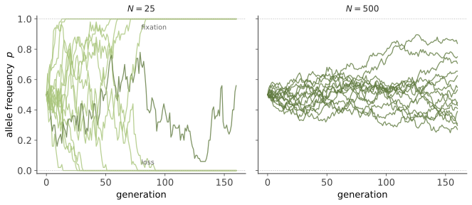

遗传 II · 群体遗传学核心
证据地位：【实】——本页是一套数学理论，其内部结论可证明，经验适用性也检验充分。 视角从家系放大到群体：不再问"这对夫妇的孩子会怎样"，而问"这个等位基因在一万代后会怎样"。这是生物学中数学化最深的领域，本质上是一套随机过程理论——如果你熟悉马尔可夫链与扩散过程，会发现它出奇地亲切（🔗 研究生数学站概率线）。它也是理解演化的必备语言，线四全部建立在此。
一、Hardy–Weinberg：零假设
考虑一个位点两个等位基因，频率 \(p\) 与 \(q=1-p\)。在随机交配、无选择、无突变、无迁移、群体无限大的理想条件下，基因型频率为
且等位基因频率世代不变。
HW 平衡的价值不在于它成立，而在于它不成立时提供信息。它是群体遗传学的零假设：观察到偏离，就说明上述某个条件被破坏了——存在选择、近交、群体结构或基因分型错误。这正是物理学里"无外力则匀速直线运动"的角色：一个用来定义"什么算异常"的基准。
二、遗传漂变：有限群体的随机性
真实群体是有限的。每代配子的抽样带来随机涨落——遗传漂变。用 Wright–Fisher 模型刻画：群体大小 \(N\)（二倍体则 \(2N\) 个等位基因拷贝），下一代从当代按当前频率二项抽样产生。
关键性质：
- 漂变是无偏的：\(E[p_{t+1}] = p_t\)（期望不变，是个鞅），但方差每代增加 \(\dfrac{p(1-p)}{2N}\)。
- 漂变必然导致固定或丢失：因为它是有界鞅，最终必然到达 0 或 1（除非有新突变或选择维持）。中性等位基因最终固定的概率 = 它当前的频率 \(p\)——这个漂亮的结论直接来自鞅的可选停时定理。
- 固定所需的平均时间（中性、初始频率 \(p\)，条件于固定）约为 \(4N\) 代。
- 杂合度衰减：\(H_t = H_0\left(1 - \frac{1}{2N}\right)^t \approx H_0 e^{-t/2N}\)。

核心直觉：\(N\) 越小，漂变越强。 这一条支配了后面的一切——包括为什么小群体会丢失多样性、为什么中性理论要用 \(N\) 来标定、以及为什么人类的遗传多样性低于许多物种。
三、有效群体大小 \(N_e\)
真实群体不满足 Wright–Fisher 的理想假设（性别比不均、繁殖成功度不均、群体大小波动、世代重叠）。有效群体大小 \(N_e\) 的定义是：表现出与该真实群体相同漂变强度的理想 Wright–Fisher 群体的大小。
\(N_e\) 通常远小于实际数量 \(N\)。三个原因值得记住：
- 性别比不均：\(N_e = \dfrac{4N_m N_f}{N_m + N_f}\)——少数雄性垄断繁殖会大幅降低 \(N_e\)。
- 群体大小波动：\(N_e\) 近似为各代的调和平均数，因而被最小值主导——一次瓶颈的影响远超之后的恢复。
- 繁殖成功度方差大：方差越大，\(N_e\) 越小。
人类的长期 \(N_e\) 估计约为 10⁴ 量级——尽管现今有 80 亿人。这个数字告诉我们，人类在演化史的大部分时间里是一个相当小的群体，这解释了人类遗传多样性偏低（低于黑猩猩），也是线四第五页人类演化的重要背景。
四、选择：确定性的力
给三种基因型赋予适应度 \(w_{11}, w_{12}, w_{22}\)。以选择系数 \(s\) 表示，等位基因频率的单代变化近似为
要点：
- \(\Delta p \propto p(1-p)\)——选择在中间频率时最快，在极端频率时很慢。所以有利突变刚出现时扩散极慢（此时它极易被漂变随机消灭），到中间频率后加速。
- 有利突变的固定概率（Haldane）：\(P_{\text{fix}} \approx 2s\)（对小 \(s\)、加性效应）。即使一个有 1% 优势的突变，也有约 98% 的概率被漂变消灭。 演化不是"好的必然胜出"，而是一个概率过程——这个反直觉的结果值得反复回味。
选择的形式：
- 定向选择：偏好一端（如抗药性上升）。
- 稳定化选择：偏好中间值（如出生体重——过轻过重死亡率都高），减少方差。
- 分裂选择：偏好两端，可能促成物种形成。
- 平衡选择：主动维持多态。经典例子——镰状细胞杂合子（HbAS）对疟疾抵抗力强，纯合突变型患镰状细胞病，纯合野生型易患疟疾，于是在疟疾流行区维持中间频率。另一个是 MHC 的极端多态性（负频率依赖选择：罕见型有优势）。
五、突变与迁移
突变是变异的唯一终极来源。人类每代每个碱基突变率约 \(1.2\times10^{-8}\)，每个新生儿携带约 50–100 个新生突变。突变率虽低，但基因组巨大，所以每代都有大量新变异进入群体。
突变–选择平衡：有害等位基因被选择清除，被突变补充，平衡频率约
这解释了为什么严重遗传病持续存在——不是因为选择失效，而是突变不断补货。隐性有害等位能维持高得多的频率，因为它藏在杂合子里躲避选择。
迁移（基因流）：迁移率 \(m\) 时，群体分化程度约 \(F_{ST} \approx \dfrac{1}{1+4N_e m}\)。推论极重要：只要每代有约一个迁移个体（\(N_e m \approx 1\)），就足以阻止群体因漂变而显著分化。 基因流是极强的同质化力量——这条对理解人类群体结构（线四第五页）很关键。
六、四种力的相对强弱
把四种力放在一起，判断哪种主导，看的是它们与 \(1/N_e\) 的比较：
| 力 | 主导条件 |
|---|---|
| 选择 | $ |
| 漂变 | $ |
| 突变 | 长期、提供原料 |
| 迁移 | \(N_e m \gtrsim 1\) 即阻止分化 |
核心结论：一个突变是否"有效中性"，不取决于它本身的效应大小，而取决于 \(s\) 与 \(1/N_e\) 的比较。同一个轻微有害的突变，在大群体中会被清除，在小群体中却可能随机固定。
这个判据是下一线（演化）的枢纽：它直接引出近中性理论，解释了为什么小群体会积累轻微有害突变、为什么基因组"垃圾"的多少与 \(N_e\) 相关。记住这个不等式，群体遗传学的一大半就掌握了。
下一页：遗传 III——把群体遗传学的工具用于人类，寻找与性状相关的位点。GWAS 是怎么做的、为什么"缺失遗传力"曾困扰整个领域、以及多基因分数能做什么、不能做什么。